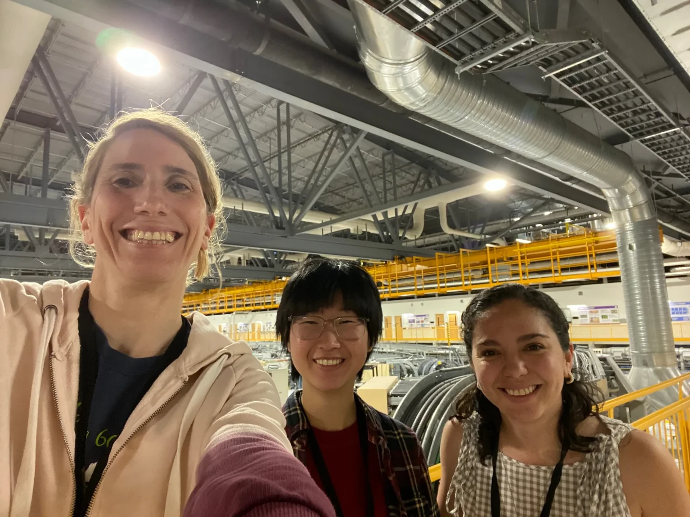
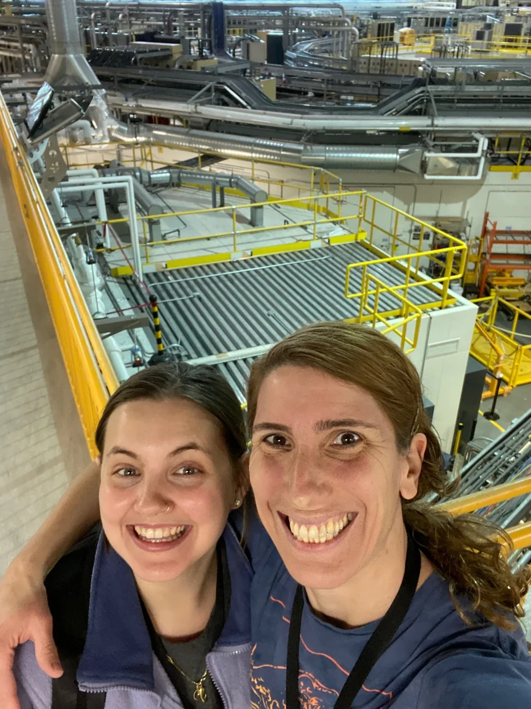

01
Phase behavior & separations
How do molecular interactions, thermodynamics and kinetics govern demixing, selective partitioning and freeze-induced segregation?
Discover the questions →We investigate how molecular and interfacial interactions shape the organization, dynamics, and properties of soft matter and complex fluids.
Led by Erica Pensini · University of Guelph
Molecular and interfacial interactions, colloid science, and self-assembly underpin our work. We investigate distinct physical phenomena without assuming that a single mechanism explains them all.
How do molecular interactions, thermodynamics and kinetics govern demixing, selective partitioning and freeze-induced segregation?
Discover the questions →How do chemical heterogeneity, interfaces and pore geometry influence diffusion, sorption and migration through porous and fractured materials?
Discover the questions →How do molecular organization, ionic redistribution and mechanical stimuli produce electrical and other functional responses?
Discover the questions →We combine spectroscopy, scattering, microscopy, interfacial characterization, thermodynamic analysis and molecular modelling, choosing the methods that best test each physical question.
Contaminant separation, solute movement through aquifers and mechanoelectric materials are important systems in which we investigate transferable physical principles—not boundaries on the questions we ask.
About the lab →
We welcome researchers trained in chemistry, physics, materials science and related fields who want to connect molecular mechanisms with observable behavior.
Graduate opportunities